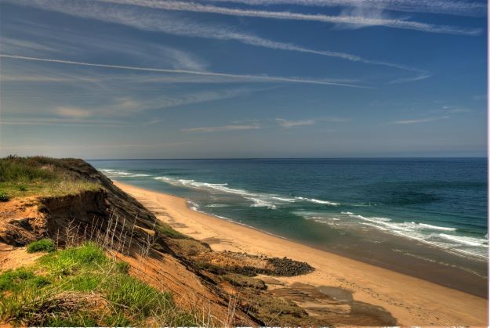
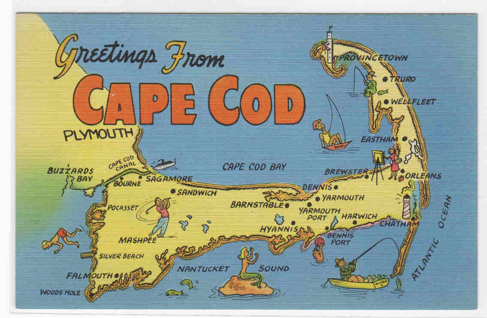
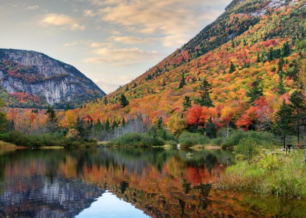
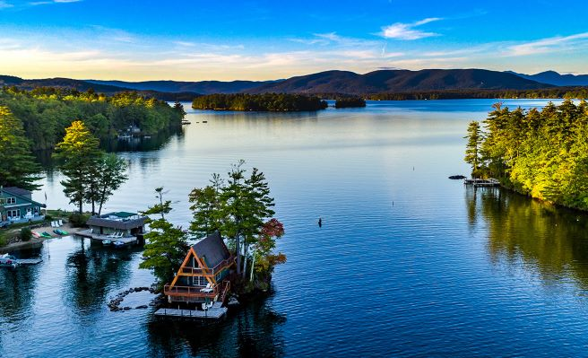
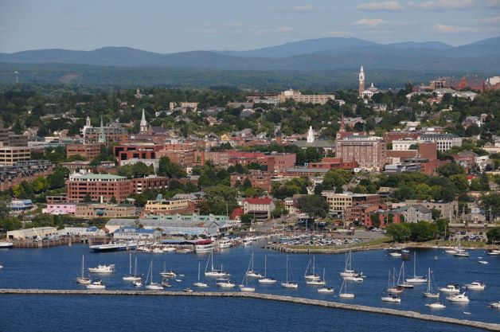

Easy New England Vacations
Great Places to Explore when You're Visiting the Northeast
-

Cape Cod
"The Cape" is one of the most popular summer spots around, why? Because there is SO MUCH TO DO! Sure, you can get your bronze aside some of the most expansive, untouched views of the Atlantic you'll see in the US; you can eat lobster rolls and drink margaritas and bike nearly the entire length of the narrow peninsula (although, maybe not in that order); you can watch classic movies at the drive in, play mini golf, watch marine life IN REAL LIFE... but that would only be scratching the surface of this amazingly unique slice of heaven.
One of the best things about Cape Cod is how easy it is to get there. You can drive the scenic and direct route from Boston, you can take the CapeFLYER passenger train, you can take one of the Fast Ferries from Boston Harbor, you can fly into one of the TWO airports (one in Barnstable, one in Provincetown, both very small, but am option nonetheless), you can take a bus, you can even ride your bike if you wanted (probably still better than some of the bus options). The form of transportation doesn't matter, the only thing that does is that you get there!
The ferry from Boston... my personal favorite way to get there. The feel of motoring across Cape Cod Bay, the anticipation of docking in P-town's colorful downtown, the full bar menu... let's just say it's a pretty decent travel option.
So, you've mini golfed to your hearts desire and you're burnt from too many beach days? Fine! The arts and culture scene on the Cape is huge. Nearly every town has a number of incredible galleries, live music and theatre can be accessed on a daily basis, and you can even learn a new skill through programs like those held at Truro's Castle Hill Center for the Arts.
Check out the Castle Hill website for inspiration! Stained glass? Why not!
There's so much to do during your trip to Cape Cod, and with such easy access to Boston it's really a no-brainer... so just go!

-

New Hampshire's White Mountains
Simply put, the White Mountains host some big, frankly unexpected gems within the small state of New Hampshire. Granite rock faces like Cannon Mountain and White Horse Ledge are excellent playgrounds for any climber. And with the incredibly accessible, extensive and challenging trail systems, it's a hiker's dream.
Getting there from Boston is as easy as getting onto Route 93 and going north until it starts looking real pretty. It might take about 2.5 hours to get to the heart of the mountains, but there are plenty of amazing vistas along the way and is well worth the distance.
In addition to hiking, rock climbing, trail running, rafting, skiing, boating and all of those healthy things, sweet towns like North Conway, Jackson and Gorham are fun places to shop, eat, drink and be merry. There are plenty of options for the kiddos too, including places like Story Land and the beloved summer classic, mini golf.
One of my own favorite places to visit as a kid Tea cup rides, anyone?!

If you're traveling far to get to the Whites, make sure to swing by Lake Winnipesauke on your way too, it's the largest lake in New Hampshire and it's waters are a true gift after a long couple days of hiking.
-
Burlington, Vermont
The gateway into the Green Mountains and right along the shores of Lake Champlain!
Plenty of wonderful dining options for any budget and occasion.
Artistic and unique, truly a place to visit this summer!

There are so many options in the Northeast for fun and adventure this season and any time of the year!
Click here for more information on the adventure to be had on the East Coast!